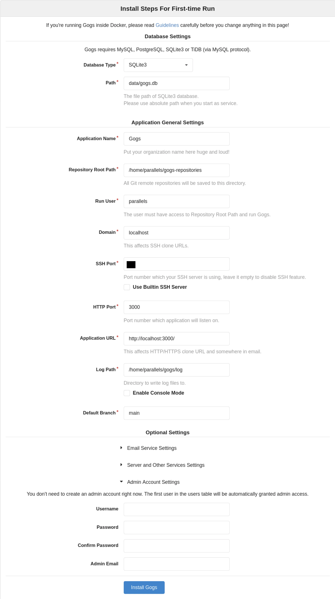
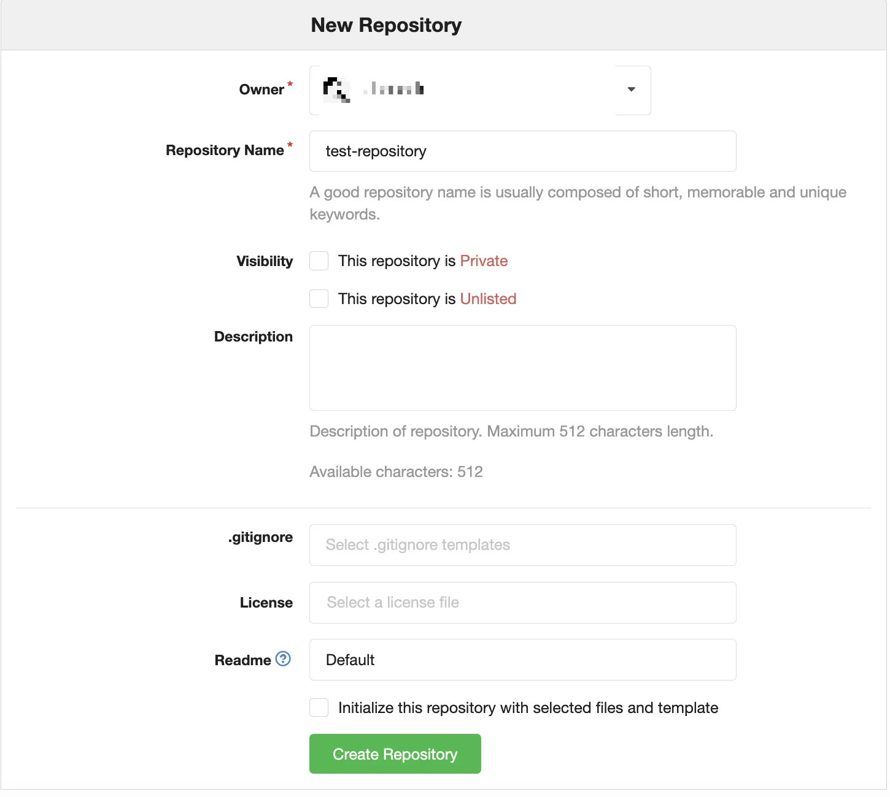

Gogs 官方号称是一个无痛的自托管 Git 服务，相较后继者 Gitea 更简单易懂，非常适合个人管理文档版本。
安装准备
确保 macOS 已安装 git：
$ brew update
$ brew install git
安装 Gogs
可以到 Gogs 官网直接下载https://gogs.io/docs/installation/install_from_binary，例如 macOS arm64 最新版本是 gogs_0.13.3_ darwin_arm64.zip。解压缩后文件夹路径为 /Users/username/path-to-gogs/gogs，进入该目录并启动gogs服务：
$ cd /Users/username/path-to-gogs/gogs
$ ./gogs web
浏览器打开安装页面 http://localhost:3000 进行下一步安装。
安装界面：

个人使用可以尽量简化：
- 数据库类型：选择
SQLite3 - 数据库文件路径：
data/gogs.db - 仓库根目录：自定义，例如
gogs-repositories - 以此用户运行：
macOS用户名 - SSH 服务端口：留空
- HTTP 端口：3000
- 应用程序 URL：
http://localhost:3000 - 日志路径：
log
安装 Gogs 成功后，第一位注册用户默认是管理员。
新建仓库：

在 Finder 中新建文件夹作为仓库，进入该文件夹并执行如下命令：
touch README.md
git init
git add README.md
git commit -m "first commit"
git remote add origin http://localhost:3000/username/test-repository.git
git push -u origin main
升级 Gogs
找到 gogs 所在文件夹，并重命名 为gogs_old：
$ mv gogs gogs_old
到官网下载 Gogs 最新版本，解压后获得一个新的 gogs 文件夹。
将 gogs_old 下三个文件夹 custom，data以及 log 复制到新的 gogs 文件夹即可：
$ cp -R gogs_old/{custom,data,log} gogs
重新启动 gogs 服务：
$ cd gogs
$ ./gogs web
进阶设置
修改默认端口
Gogs 默认端口为3000，初次启动可改变端口，例如 3001：
$ ./gogs web -port 3001
反向代理
NGINX
server {
listen 80;
server_name git.crystalnetwork.us;
location / {
proxy_pass http://localhost:3000;
}
}
Caddy
git.example.com {
proxy / http://localhost:3000
}
开机启动
创建 Launch Agent 文件： ~/Library/LaunchAgents/com.gogs.web.plist ，内容如下：
<?xml version="1.0" encoding="UTF-8"?>
<!DOCTYPE plist PUBLIC "-//Apple//DTD PLIST 1.0//EN" "http://www.apple.com/DTDs/PropertyList-1.0.dtd">
<plist version="1.0">
<dict>
<key>KeepAlive</key>
<true/>
<key>Label</key>
<string>com.gogs.web</string>
<key>ProgramArguments</key>
<array>
<string>sh</string>
<string>-c</string>
<string>cd /Users/username/path-to-gogs/gogs; ./gogs web</string>
</array>
<key>WorkingDirectory</key>
<string>/Users/username/path-to-gogs/gogs/</string>
<key>RunAtLoad</key>
<true/>
</dict>
</plist>
加载 daemon 服务：
$ launchctl load -w ~/Library/LaunchAgents/com.gogs.server.plist
启动 gogs：
$ launchctl start com.gogs.web
停止 gogs：
$ launchctl stop com.gogs.web
数据迁移
复制 gogs 以及 gogs-repositories 文件夹到新电脑，根据实际情况修改 app.ini。之后正常启动即可。
参考资料
- Gogs 官网 https://gogs.io
- Gogs 帮助文档faqs https://gogs.io/docs/intro/faqs
- macOS 搭建 Gitea 私有 Git 服务器教程 https://blog.csdn.net/m0_55316234/article/details/150212224
- Start the runner with LaunchDaemon(macOS) https://docs.gitea.com/usage/actions/act-runner#start-the-runner-with-launchdaemonmacos
- 如何使用Gogs搭建自己的git服务器 https://www.cnblogs.com/zhaotianff/p/17887191.html